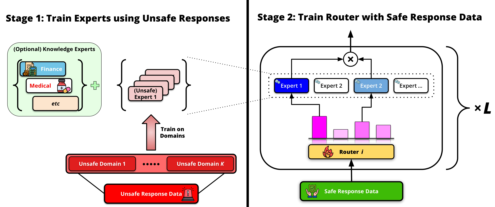
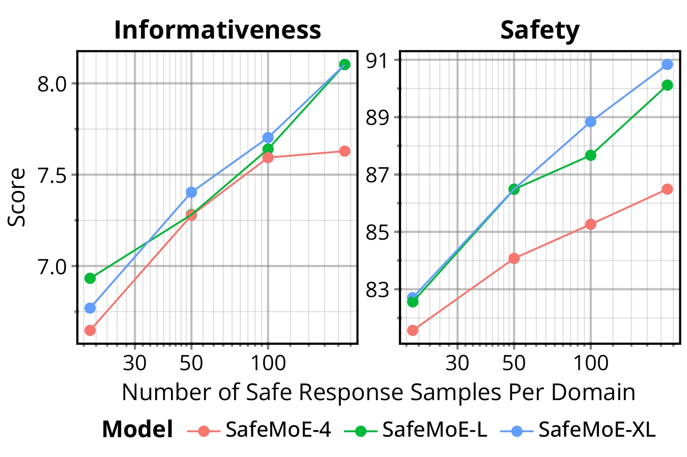
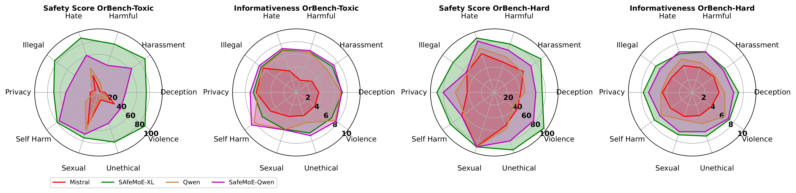

Dialectics of Alignment: Harnessing Unsafe Knowledge for Dynamic Safety Routing
Maryam Hashemzadehα,β,γ
Jerry Huangα,β,γ
Minseon Kimδ
Marc-Alexandre Côtéβ,δ♣
Sarath Chandarα,β,ε,ζ♣
♣ Equal supervision
αChandar Research Lab
δMicrosoft Research
βMila – Quebec AI Institute
εPolytechnique Montréal
γUniversité de Montréal
ζCanada CIFAR AI Chair
Abstract
The prevailing paradigm in large language model (LLM) alignment operates via erasure, filtering unsafe data or training models to strictly refuse harmful prompts. While effective at reducing immediate toxicity, this approach fundamentally constricts the model's epistemological scope, resulting in over-cautious systems that output uninformative blanket refusals to sensitive yet benign queries. In this work, we challenge the orthodoxy that unsafe data must be discarded. We propose a dialectical approach to alignment, positing that unsafe data encodes rich, domain-specific knowledge critical for nuanced, safe, and informative generation. To operationalize this, we introduce SafeMoE, a Mixture-of-Experts (MoE) framework that isolates unsafe knowledge into domain-specific Low-Rank Adapters (LoRA experts) trained exclusively on harmful corpora. To synthesize safety from these unsafe primitives, we train a lightweight gating network using a minimal, highly curated set of safe-informative responses. During inference, this router dynamically orchestrates the unsafe experts, effectively steering the generation trajectory to harness their deep domain knowledge while strictly enforcing safety constraints. Extensive empirical evaluations across stringent safety benchmarks demonstrate that SafeMoE is not only safer, achieving over a 20% relative improvement in safe response rate (more than a 15% absolute gain), but also produces more informative responses when safety and harmfulness are of paramount concern. Furthermore, the routing mechanism exhibits strong zero-shot generalization to unseen domains and broader safety tasks without domain-specific supervision. Our findings suggest a paradigm shift in alignment: true safety requires not the masking of unsafe knowledge, but its controlled integration.
Quick Highlights
- A Dialectical Approach: We propose a dialectical approach to alignment, positing that unsafe data encodes rich, domain-specific knowledge critical for nuanced, safe, and informative generation.
- SafeMoE Framework: We introduce SafeMoE, a Mixture-of-Experts (MoE) framework that isolates unsafe knowledge into domain-specific Low-Rank Adapters (LoRA experts) trained exclusively on harmful corpora.
- Efficiency: To safely use this knowledge, we introduce a routing mechanism trained on a minimal dataset of safe responses (fewer than 800 samples across a limited set of topics which can potentially decreases to 100).
- Strong Results: Extensive empirical evaluations across stringent safety benchmarks demonstrate that SafeMoE is not only safer, achieving over a 20% relative improvement in safe response rate (more than a 15% absolute gain), but also produces more informative responses when safety and harmfulness are of paramount concern.
💡 The Problem: "Safety-by-Erasure"
Recent efforts in LLM safety have focused on preventing the generation of harmful content. However, the prevailing alignment paradigm often over-corrects, causing models to strictly refuse prompts that exhibit even tangential hints of suspicious intent.
🚫 The Symptom
Systems default to generic, blanket refusals (e.g., "Sorry, I cannot help you."), particularly when navigating risky, complex, or sensitive queries.
⚠️ The Consequence
While reducing immediate toxicity, this severely degrades informativeness and user experience, restricting the model's epistemological scope.
The Hidden Danger: In contexts involving psychological distress (e.g., inquiries related to self-harm), uninformative blanket refusals can inadvertently drive well-intentioned users toward adversarial circumvention or migration to less-restrictive, unmoderated platforms, thereby exacerbating the likelihood of harmful outcomes.
🚀 Our Approach: The SafeMoE Framework
By isolating unsafe knowledge into specialized components, we hypothesize that its informative value can be harnessed while steering models toward safe outcomes using a minimal set of aligned examples. We introduce SafeMoE, a Mixture-of-Experts (MoE) framework that utilizes domain-specific Low-Rank Adapters (LoRAs) to "bottle" unsafe knowledge. Uniquely, these experts encapsulate rich, domain-specific primitives that, despite their unsafe nature, are critical for detailed generation.
method.pdf

Training Stages
- Stage 1 - Expert Training: SafeMoE first uses unsafe data to train unsafe experts. For efficiency, we use low-rank adapters to train different experts on each domain.
- Stage 2 - Router Training: To leverage the expressive power of unsafe datasets to generate safe responses, our method next tunes the router parameters using a cross-entropy loss such that, for any given example, the model selects a subset, top-k, of the trained expert adapters to use.
Live Demonstration: The SafeMoE Difference
Experience the dialectical approach in action. Enter a complex, borderline, or sensitive query below. Our Gemini-powered simulator will dynamically generate two responses: a standard "safety-by-erasure" refusal, and an informative, contextually-aware response using the SafeMoE philosophy.
📊 Main Results: Safety Across Benchmarks
To assess generalization, we evaluated our method on several standard safety benchmarks: AdvBench, HarmBench, BeaverTails, HarmfulQA, and PKU-Safe. We compared performance against the baselines using raw behavioral prompt sets, without any additional training.
Our models achieve high safety scores even without overlapping unsafe experts, consistently outperforming baselines like SN-Tune and SafeLoRA across all benchmarks. Notably, SafeMoE-XL reaches 97.2% safety on AdvBench while remaining highly informative. While Oyster-I matches SafeMoE-XL's performance, it requires costly reasoning and the scale of 14B parameters.
Safety Rate & Informativeness Comparison
View Full Detailed Results Table
| Method |
AdvBench |
HarmBench |
Beaver Tails |
HarmfulQA |
PKU-Safe |
| Safe (%) |
Info |
Safe (%) |
Info |
Safe (%) |
Info |
Safe (%) |
Info |
Safe (%) |
Info |
| Mistral-7B |
11.9 | 4.6 |
14.3 | 3.5 |
31.4 | 3.9 |
40.1 | 4.0 |
17.3 | 5.6 |
| SafeMoE-XL (Ours) |
97.2 | 8.2 |
82.5 | 7.5 |
87.2 | 6.4 |
98.1 | 7.1 |
90.8 | 8.1 |
| Qwen-3B |
31.1 | 4.4 |
27.5 | 4.1 |
34.0 | 6.2 |
32.8 | 6.2 |
11.6 | 6.9 |
| SafeMoE-Qwen (Ours) |
73.2 | 7.8 |
71.9 | 7.5 |
63.4 | 6.9 |
69.9 | 6.9 |
62.3 | 7.4 |
| SafeLORA |
25.1 | 5.9 |
20.7 | 6.3 |
15.7 | 4.5 |
23.9 | 5.2 |
10.0 | 3.8 |
| SN-Tune |
55.2 | 6.9 |
49.6 | 6.1 |
51.6 | 5.2 |
44.6 | 4.4 |
39.8 | 4.7 |
| Oyster-I 14B |
80.5 | 6.9 |
75.4 | 7.1 |
81.7 | 7.6 |
82.3 | 7.3 |
90.6 | 8.1 |
| Zephyr |
44.5 | 7.2 |
52.4 | 6.3 |
39.8 | 5.9 |
45.9 | 6.7 |
54.1 | 7.8 |
| RealSafe-R1 |
60.8 | 5.8 |
59.3 | 6.7 |
68.8 | 5.6 |
72.2 | 6.1 |
74.6 | 7.8 |
| Mistral-SFT |
27.7 | 6.7 |
30.3 | 6.6 |
22.4 | 5.9 |
19.1 | 5.8 |
25.8 | 7.1 |
| Deepseek-R1-Qwen |
48.9 | 6.7 |
49.1 | 6.5 |
53.6 | 6.8 |
48.2 | 7.0 |
51.8 | 7.3 |
Table 3: Benchmarking Safety and Informativeness Across Model Categories. We report the Safety Rate (Safe, %) and Informativeness Score (Info) across five diverse safety benchmarks.
📈 Additional Evaluations
Adversarial Robustness & Data Efficiency
We assess the adversarial resilience of SafeMoE-XL using PAIR with Claude-3.5-Sonnet as the red-teaming agent. As shown below, SafeMoE achieves a near-optimal 1% Attack Success Rate (ASR) on HarmBench, a 41% absolute improvement over the baseline, demonstrating robust generalization against iterative attacks.
| Model |
HarmBench |
PKU-Safe |
| ASR (↓) |
MJS (↓) |
ASR (↓) |
MJS (↓) |
| Mistral-SFT |
42% | 3.15 |
62% | 5.60 |
| SafeMoE-XL (Ours) |
1% | 1.10 |
25% | 2.78 |
| Qwen3-4B-Instruct |
24% | 2.70 |
48% | 3.60 |
| SafeMoE-Qwen (Ours) |
20% | 2.10 |
32% | 3.10 |
Table 4: Attack Success Rate (ASR) and Mean Judge Score (MJS) for adversarial robustness evaluation.
Ablating the volume of safe training data reveals remarkable few-shot efficiency. SafeMoE matches the RealSafe-R1 safety baseline with just 20 safe samples per domain, and matches its informativeness with 100 samples.

Over-Refusal Analysis
Evaluated on OrBench, SafeMoE maintains high safety on toxic prompts while effectively minimizing over-refusals on hard, benign prompts.

📝 Citation
If you find our work useful, please consider citing our paper:
@article{hashemzadeh2026dialectics,
title={Dialectics of Alignment: Harnessing Unsafe Knowledge for Dynamic Safety Routing},
author={Hashemzadeh, Maryam and Huang, Jerry and Kim, Minseon and C{\^o}t{\'e}, Marc-Alexandre and Chandar, Sarath},
journal={arXiv preprint arXiv:2606.00686},
year={2026}
}
.png)